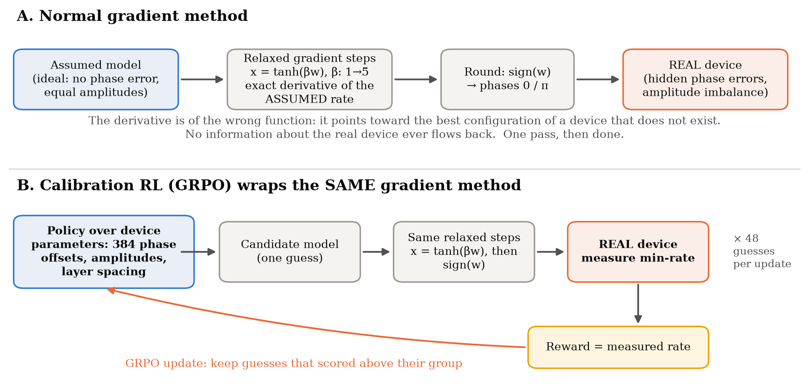
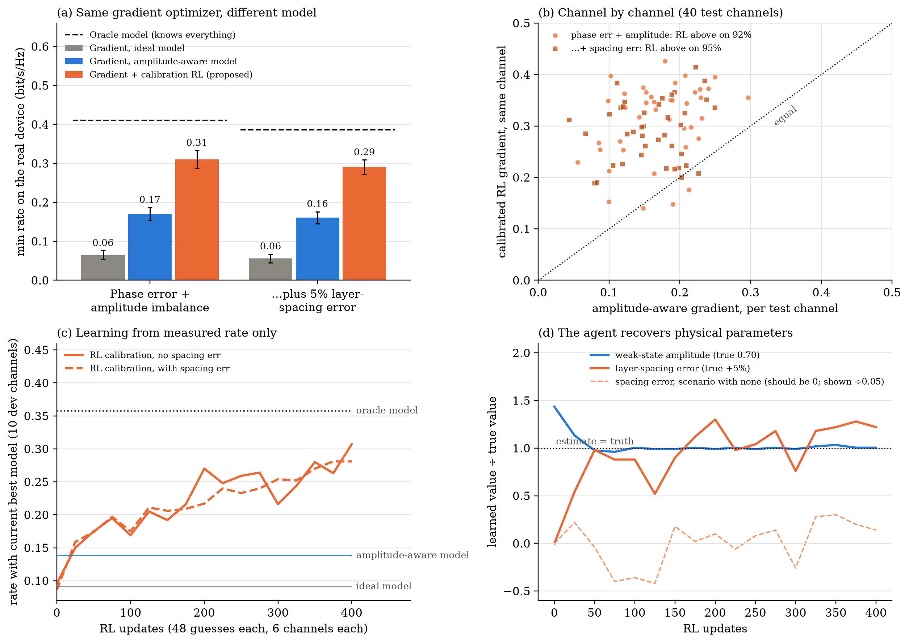
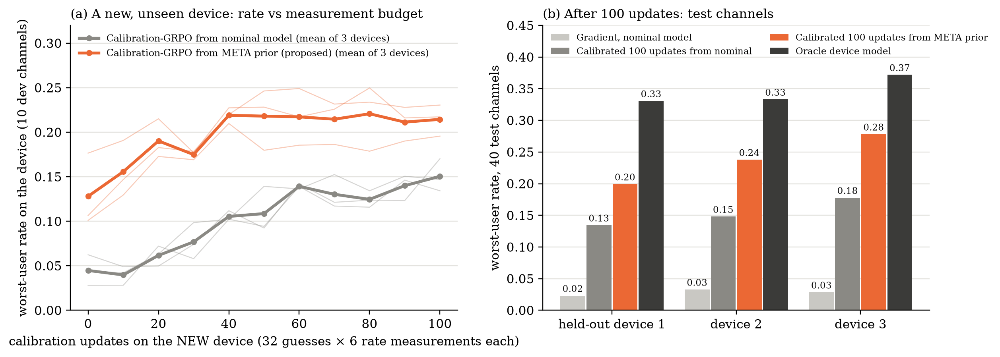
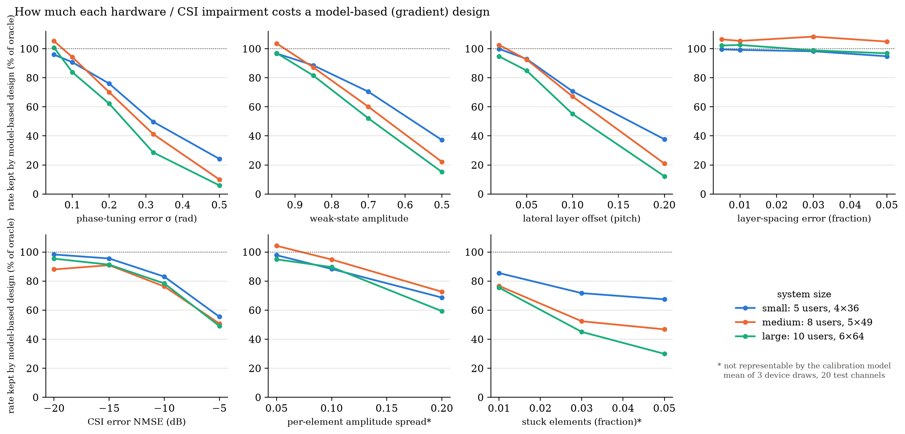
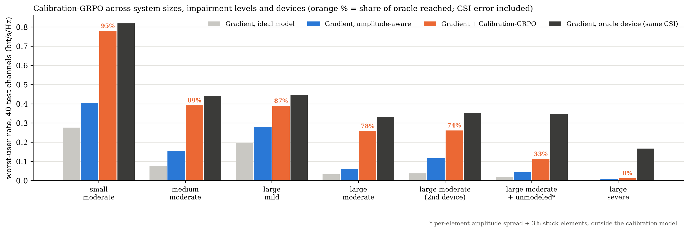
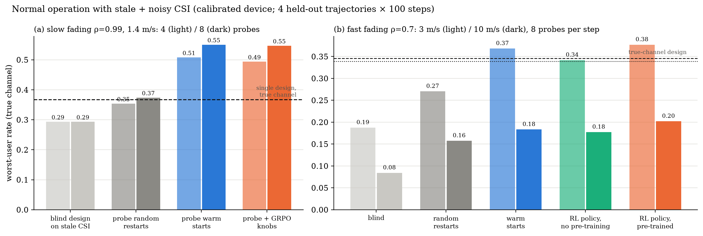
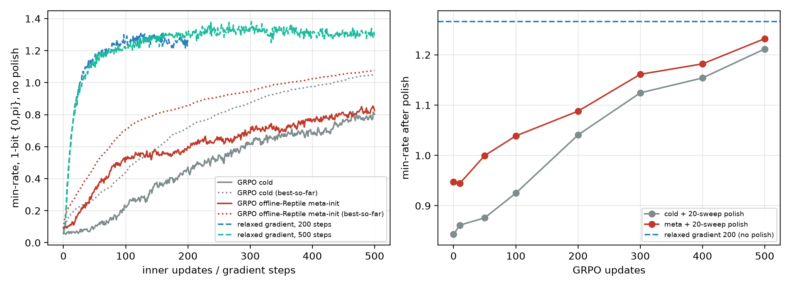

Gradient methods are excellent at configuring stacked intelligent metasurfaces — as long as the hardware behaves exactly like its model. Real devices never do. I built a bilevel reinforcement-learning framework in which a critic-free GRPO policy learns a device's hidden non-idealities from measured data rates alone, hands a corrected model to a fast gradient solver, and meta-learns that knowledge across devices from the same fabrication batch.
A stacked intelligent metasurface (SIM) is a stack of programmable layers that beamforms in the wave domain. Here: 6 layers × 64 one-bit elements (384 binary phases) serving 10 users with max-min fairness at 28 GHz. I implemented an exact relaxed-gradient solver — every element relaxed as x = tanh(βw), β annealed 1→5, ascent on a smooth minimum of the user rates, then rounded to phases {0, π}. With a perfect model it beats my RL agent. That honest benchmark redirected the project.
Real hardware is never the model: phase-tuning errors, state-dependent amplitudes, inter-layer spacing and alignment errors, imperfect channel knowledge, noisy feedback. The gradient differentiates the assumed rate — and nothing about the real device ever flows back.
Hardware errors belong to the device, shared by every channel. So instead of learning a configuration per channel, the RL policy learns what the device actually is: 384 phase offsets, per-layer state amplitudes, per-layer spacing and lateral offsets. Each candidate model is judged only by the rate the real device delivers when the gradient solver trusts it.
Bilevel view: the outer RL loop learns parameters shared across all channel-tasks; the inner gradient solver adapts per channel. RL supplies what the gradient lacks — a correct model; the gradient supplies what RL lacks — fast per-channel optimization.

40 held-out test channels; every rate is measured on the true device with phases exactly in {0, π}. The final row switches on everything at once: element phase-tuning error, state-dependent amplitude (1.00 / 0.70), per-layer spacing and lateral offsets, CSI error at NMSE −10 dB and ±5% noisy rate feedback.
| Scenario | Gradient, ideal model | Gradient, amplitude-aware | Gradient + Calibration-GRPO | Oracle model |
|---|---|---|---|---|
| Phase error + amplitude imbalance | 0.065 | 0.170 | 0.310 | 0.411 |
| … + 5% layer-spacing error | 0.056 | 0.161 | 0.291 | 0.386 |
| All impairments incl. CSI error & noisy feedback | 0.032 | 0.081 | 0.276 | 0.328* |
Worst-user rate in bit/s/Hz. *Oracle device with the same CSI error; with perfect CSI it reaches 0.388.

Weak-state amplitude 0.70 learned as 0.70–0.72; lateral layer offsets 0.10 → 0.018 element pitch; phase offsets 0.32 → 0.21–0.23 rad — all from scalar rate feedback. Calibrating on a single channel generalized to unseen channels almost as well as a 200-channel pool (0.293 vs 0.310).
Devices from one fabrication batch share systematic errors (a common phase-error pattern, spacing bias, typical amplitude imbalance) on top of their own device-specific errors. Meta-Calibration-GRPO runs Reptile over device-tasks with Calibration-GRPO as the inner learner: 120 simulated devices, 25 inner updates each. A new device then starts from the learned prior instead of the ideal model.

The prior absorbs the shared batch structure (phase-pattern error 0.316 → 0.199 rad, amplitude 0.69 vs batch 0.70); the inner GRPO then adapts the device-specific amplitude and geometry.
Every impairment was first switched on alone and swept in size, on three SIM sizes (5 users / 4×36, 8 users / 5×49, 10 users / 6×64) and three device draws. Bigger surfaces are markedly more fragile: on the 384-element system, a model-based design keeps only 6% of the achievable rate at 0.5 rad phase error, 15% at a 0.5 weak-state amplitude and 12% at 0.2-pitch layer misalignment — while layer-spacing errors up to 5% are almost harmless.

| Configuration | Ideal-model gradient | Amplitude-aware | Calibration-GRPO | Oracle | Share of oracle |
|---|---|---|---|---|---|
| Small, moderate | 0.277 | 0.405 | 0.781 | 0.819 | 95% |
| Medium, moderate | 0.079 | 0.155 | 0.392 | 0.441 | 89% |
| Large, mild | 0.198 | 0.281 | 0.390 | 0.446 | 87% |
| Large, moderate | 0.033 | 0.061 | 0.259 | 0.332 | 78% |
| Large, moderate · 2nd device | 0.038 | 0.118 | 0.262 | 0.354 | 74% |
| Large, moderate + unmodeled errors | 0.020 | 0.044 | 0.114 | 0.346 | 33% |
| Large, severe | 0.003 | 0.009 | 0.013 | 0.167 | 8% |
Worst-user rate (bit/s/Hz), 40 held-out test channels. Unmodeled errors = per-element amplitude spread + 3% stuck elements, outside the calibration model. At the severe level every candidate model yields near-zero rate, so the reward carries no signal — the method's limit.

After calibration the remaining loss is channel knowledge: the base station only sees a stale, noisy estimate. Each step it probes a handful of candidate configurations on the real channel and deploys the best. With slow fading, probing warm-started candidates recovers the whole CSI loss (+88% over blind design). With fast fading (ρ = 0.7) at 10 m/s, an RL start policy pre-trained offline on 30 simulated trajectories beats the best heuristic by +10% on every held-out trajectory and the blind design by 2.4×; without pre-training it does not.

An offline meta-RL study (multi-task pre-training, Reptile, CAVIA-style context and a new feedback-conditioned in-context policy) is in progress under paired noise on 8 held-out trajectories.
Before the calibration work, the project systematically tested meta-learning for user mobility: Reptile meta-prior ensembles, attention-based reset rules, single-copy Reptile / periodic-EMA / proximal Reptile / FOMAML, a changed (flip) MDP, offline Reptile initialization and meta-learned unrolled optimizers.
No single-copy meta-learner beat a plain warm start (best Reptile: 99.3%) — consecutive channels are nearly identical, so the last weights are already the best prior.
Reptile meta-initialization of GRPO: +0.26 bit/s/Hz at 50 updates on 250 unseen mobile-user channels (92% improved), ~7× fewer updates to the cold start's level.
Meta-Calibration-GRPO — where RL matters (hardware mismatch) and meta-learning matters (shared fabrication structure) at the same time.

With a perfect model, 500 GRPO updates (cold or meta-initialized) stay below the relaxed-gradient solver — the result that motivated targeting model mismatch instead.
An exact gradient solver is the right tool when the model is right. When it is not, a critic-free group-relative policy can learn the model itself from measured rates alone — recovering the hardware's hidden phase errors, amplitudes and geometry, lifting the worst user's rate 3.4-fold under combined impairments, and, meta-learned across a fabrication batch, calibrating each new device with 5–10× fewer measurements.